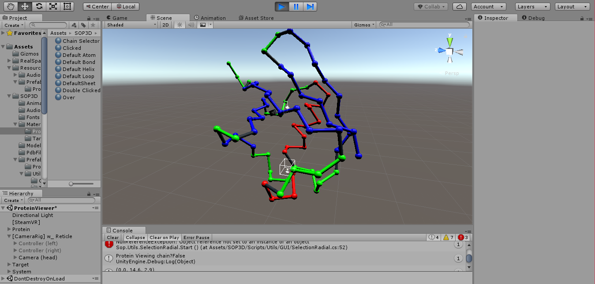
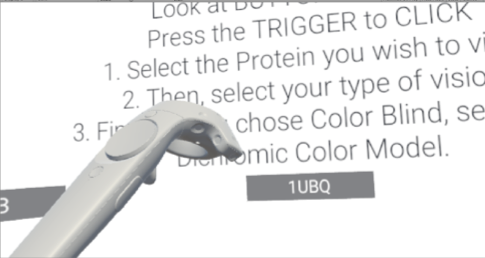
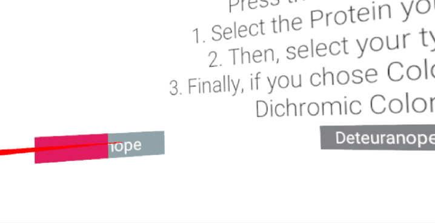
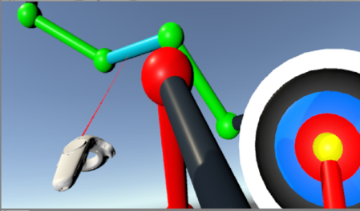

Senior Project
SOP_3D
Created using Unity, Oculus Rift, C#. Spring 2017.
- Sonification of Proteins is a virtual reality project being developed by at the University of Florida's SoundPad Lab focused on designing user interfaces for visually impaired users.
- SOP_3D focused on creating a visualization tool to describe the spatial information of proteins in PDB files to create macromolecule structures using 3D audio.
- Originally developed on the HTC Vive, SOP-3D was ported onto the Oculus Rift system to integrate controller interaction.
My main contributions of work on this project focused on restructuring and extending the user interface such that:
- SOP_3D supports various viewing modes for different visual impairments including different types of color-blindness and low vision users 
- SOP_3D allows for user interaction with Oculus Rift controllers   